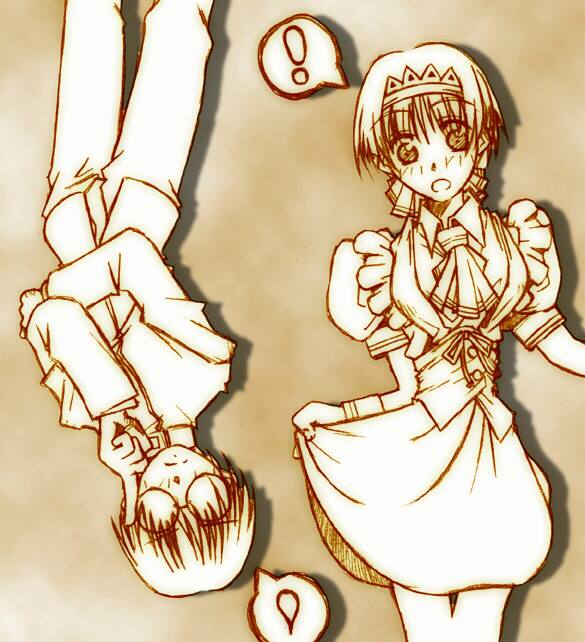

| DEDICATED STORIES | CONTRIBUTER | RECOMMEND |
| 代役はメイドさん？ | ことぶきひかるさん | はめると若返る魔法のアイテム「リバースリング」、その中でもさらに特殊な性別変化の効能も併せ持つリングによってひきおこされるドタバタ劇です。 |
| 委員長はメイドさん!? | 真城 悠さん (Homepage) |
委員長の座を奪い取った井口栄一。そんな彼に「委員長はメイドさん」という不条理極まりない学園の「伝統」がのしかかる！ |
| メイド・イン・ヘヴン | Ｃｉｎｄｙさん | ショートストーリーのお手本のような上手い作品です。双子の兄妹、馨(兄)と薫(妹)。薫は、男よりも男らしい妹で、いっぽう、馨は学校でクラス委員長を務めるかたわら「恋愛シミュレーションの主人公の名前を〝おにいちゃん〟にして自分を慰めている」複雑な年頃の兄でもあった。この二人の「とりかへばや」の結末は…？ |

|
仕事疲れでヘロヘロの時に落書きをしてるとこんなのが描けました。うわらば!! |